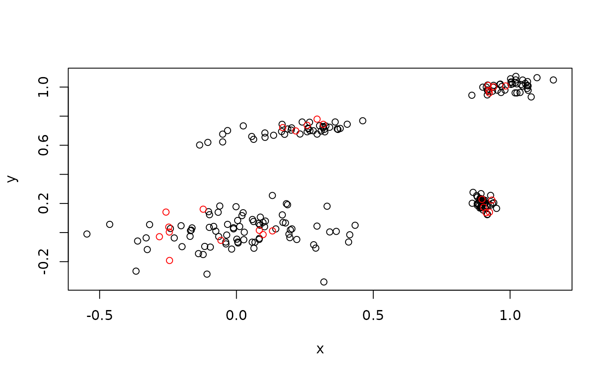

A simulated data set with four clusters in \(R^2\). Each cluster is represented by a bivariate normally distributed random variable.
\(\mu\) are the coordinates of the means of the distributions and \(\Sigma\) contains the covariance matrices. Two data stream are created using a fixed sequence \(<1,2,1,3,4>\) through the four clusters. For the training data, the sequence is repeated 40 times (200 data points) and for the test data five times (25 data points).
The code to generate the data is shown in the Examples section below.
Usage
data(EMMsim)Format
EMMsim_train and EMMsim_test are matrices containing the
data.
EMMsim_sequence_train and EMMsim_sequence_test
contain the sequence of the data through the four clusters.
Examples
data(EMMsim)
plot(EMMsim_train)
points(EMMsim_test, col = "red")

## the data was generated by
if (FALSE) { # \dontrun{
set.seed(1234)
## simulated data
mu <- cbind(x = c(0, 0.2, 1, 0.9),
y = c(0, 0.7, 1, 0.2))
sd_rho <- cbind(
x = c(0.2, 0.15, 0.05, 0.02),
y = c(0.1, 0.04, 0.03, 0.05),
rho = c(0, 0.7, 0.3,-0.4)
)
Sigma <- lapply(
1:nrow(sd_rho),
FUN = function(i)
rbind(
c(sd_rho[i, "x"] ^ 2, sd_rho[i, "rho"] * sd_rho[i, "x"] * sd_rho[i, "y"]),
c(sd_rho[i, "rho"] * sd_rho[i, "x"] * sd_rho[i, "y"], sd_rho[i, "y"] ^
2)
)
)
sequence <- c(1, 2, 1, 3, 4)
EMMsim_sequence_train <- rep(sequence, 40)
EMMsim_sequence_test <- rep(sequence, 5)
library("MASS")
EMMsim_train <- t(sapply(
EMMsim_sequence_train,
FUN = function(i)
mvrnorm(1, mu = mu[i, ], Sigma = Sigma[[i]])
))
EMMsim_test <- t(sapply(
rep(EMMsim_sequence_test),
FUN = function(i)
mvrnorm(1, mu = mu[i, ], Sigma = Sigma[[i]])
))
} # }